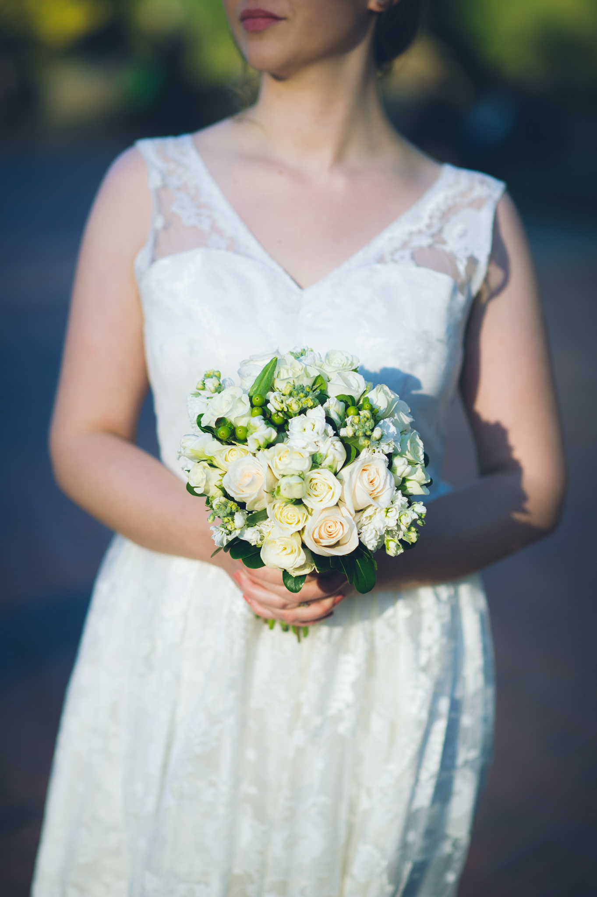
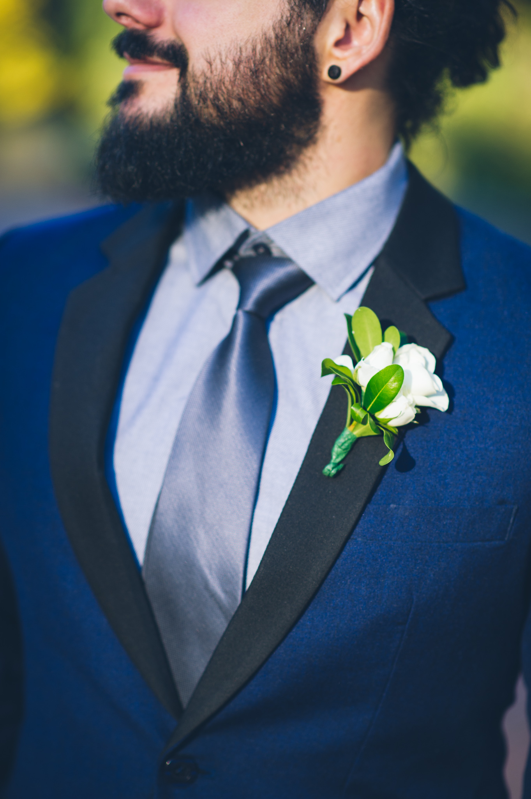

Christina
...ist Christian gleich am ersten Schultag aufgefallen. Behauptet von sich selber eine Zauberin, gefangen in einer Welt voller Muggel, zu sein.
Christina war in ihrem früheren Leben eine Schildkröte und würde gerne den lieben langen Tag im Wasser treiben und Schätze aus den Tiefen des Meeres bergen.
Außerdem liebt sie es Disney Filme mitzusprechen. Sie ist durch Christian zum Stammgast von Rock im Park geworden.


Christian
...musste Christinas Aufmerksamkeit erst mit einem Referat für sich gewinnen.
Hat immer eine Antwort, wenn Christina ihn fragt "von wem ist dieser Song?" oder "in welchem Film hat der nochmal mitgespielt?".
Hat durch Christina (fast) seine Angst vor tiefen Gewässern überwunden und ist generell sehr ihrem Reisefieber angetan.
Er bleibt selbst bei den schlimmsten Flugturbulenzen locker und lässt sich durch kaum etwas aus der Ruhe bringen (Ausnahme: tiefe Gewässer).
Begonnen hat alles im September 2010. Beide fassten den Entschluss, nach ihrer Ausbildung das Abitur nachzuholen, um später ein Studium zu beginnen.
Kennen- und lieben gelernt haben sie sich in der Max-Grundig-Schule in Fürth.
Christian durfte in den Zigarettenpausen Christinas heiße Schokolade halten oder ihr Nachhilfe im Fach Wirtschaftsinformatik geben.
Richtig gefunkt hat es dann schließlich auf einer Klassenfahrt im Kloster Banz.
Ende 2015 hat Christian sich dazu entschlossen, Christina einen Heiratsantrag zu machen.
Geplant war, Christina zum Jahrestag eine Box zu schenken, aus der sie im Jahr 2016 jeden Tag eine kleine Botschaft ziehen durfte.
Dabei handelte es sich um Anekdoten aus ihrer Beziehung, Gutscheine usw. Die Box sollte dann zur Jahresmitte zu dem eigentlichen Antrag führen.
Leider nahm die Vorbereitung mehr Zeit in Anspruch als erwartet und der Antrag wurde letztlich an das Jahresende geschoben.
Zwei Tage vor dem geplanten Antrag passierte allerdings das Unglück:
Christina konfrontierte Christian damit, dass sie mit einem Heiratsantrag gerechnet hat.
Denn sie hat einen sechsten Sinn, wenn es um Überraschungen von Christian geht (oder er sich einfach sehr auffälig verhält).
Verunsichert fügte sie allerdings hinzu, dass sie das allerdings noch nicht für möglich hält. Ertappt und hilflos, sagte Christian das denkbar unpassendste in dieser Situation:
"Ne, sorry". Christina war natürlich von dieser Antwort sichtlich enttäuscht.
Christian hatte natürlich die Möglichkeit, seinen Plan weiter zu verfolgen und den Antrag in ein paar Tagen zu stellen.
Er befürchtete allerdings, dass Christina davon ausgehen könnte, dass er den Antrag jetzt nur gemacht hat, damit sie nicht mehr enttäuscht ist. Deshalb entschied er sich für Option #2.
Beide besuchten an diesem Abend noch den Weihnachtsmarkt und als sie wieder zu Hause ankamen, packte er die Gelegenheit beim Schopf.
Er wartete darauf, bis Christina auf der Toilette war, um den Ring zu holen und sich vor die Toilettentür zu knien. Die Spülung lief noch, als Christina Christian das Ja Wort gab.
Tatjana
..., die gerne Partyspiele auf ihrer Wii gegen den Computer spielt, kennt die Braut seit der 5. Klasse und ist mit ihr durch dick und dünn gegangen.
Vorallem in der Phase, die Christinas Eltern nur als "die wilde Zeit" betiteln war sie festes Mitglied der Alpha Eichkätzla.
Mit ihrem Nachtisch, mit dem sie reihenweise die Gaumen ihrer Gäste verzückt, ist sie in weiten Teilen des Frankenlands bekannt.
Svenja
...lebt nach ihrem Motto "Safety first". Durch ihr stets mondänes Auftreten hat sie sich bestens als Stylistin und Modeberaterin der Braut qualifiziert.
Zu ihrer Hochzeit wünscht sie sich ein Alpaka, das ihr die Ringe bringt.
Ein weiteres Alpaka soll die Trauung übernehmen. Und generell sollen eigentlich nur Alpakas anwesend sein.
Jessica
...kennt Christian bereits ihr Leben lang. Sie ist in ihrer Rolle als große Schwester, Ehefrau und Mutter von Zwillingen unerreicht.
Nutzt jede mögliche Gelegenheit, um ihren Bruder zu erschrecken - mit Erfolg. Gibt es Neuigkeiten, dann ist sie die erste die es erfährt.
Als Königin der exotischen Frucht Pomelo beherrscht sie die Unterschrift ihrer Mutter besser, als ihre Mutter.
Nico
...teilt mit Christian seine Leidenschaft für Filme und Videospiele.
Auch wenn er mit seiner Liebe zu Star Wars manchmal über die Stränge schlägt ist er ein toller Geselle für lange philosophische Diskussionen bis zur späten Stunde.
Er ist gerade dabei seine Karriere als rasender Reporter zu starten - genau wie Karla Kolumna.
Zu seinen auserkorenen Erzfeinden gehören Mark Zuckerberg sowie der komplette Springer-Verlag.

Amelie
...hat unseren Weg erstmalig in der 13. Klasse der BOS gekreuzt. Sie ist ein ehemaliges Jetset - Girl und kann in 20 verschiedenen Sprachen Bier bestellen.
Sollte es nach dem Studium nicht mit ihrem Opiumimperium klappen, träumt sie von ihrer eigenen Flotte Grillhändlewägen.
Sie ist neben Christina und Christian das dritte Mitglied der Gruppierung "der harte Kern".
Lars
...haben wir an der BOS in der 12. Klasse kennen und lieben gelernt. Hat die Herzen des Brautpaares mit seinem Wikipedia ähnlichem Wissen im Sturm erobert.
Spielt man mit ihm Stadt Land Fluß, hat er zu jedem Buchstaben bereits mögliche Lösungen für die jeweiligen Kategorien parat, bevor das Spiel überhaupt begonnen hat.
Außerdem hat er eine Schwäche für sehr teure Füller.